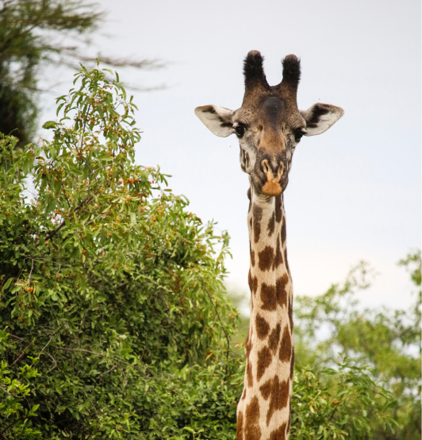
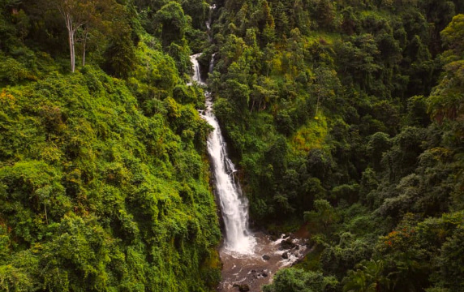
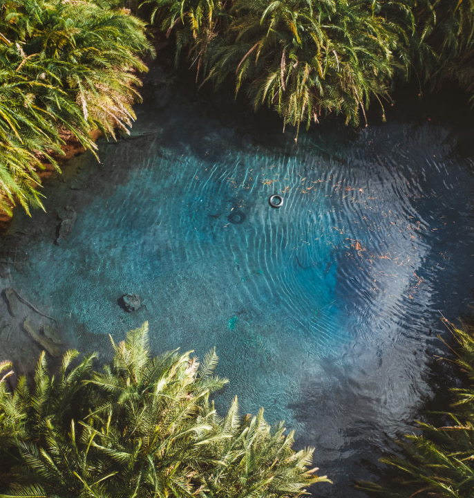
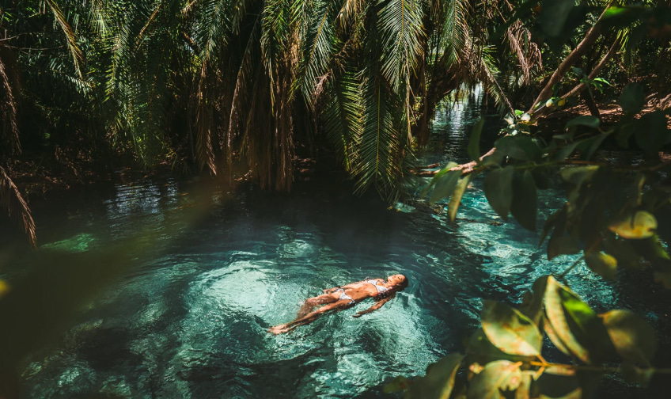
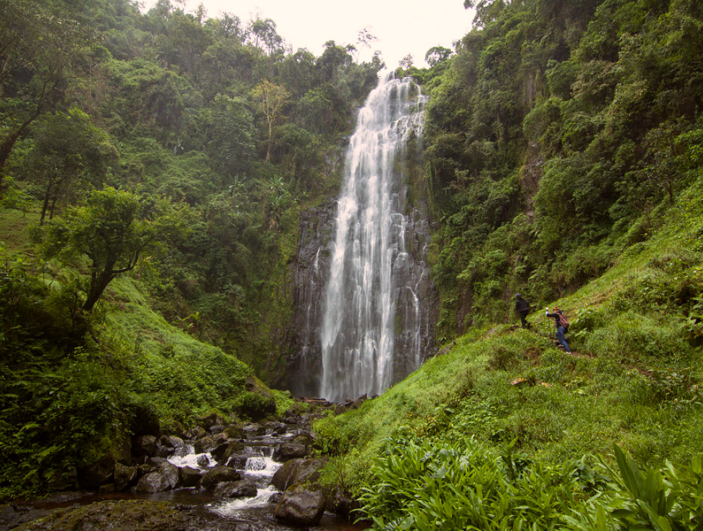
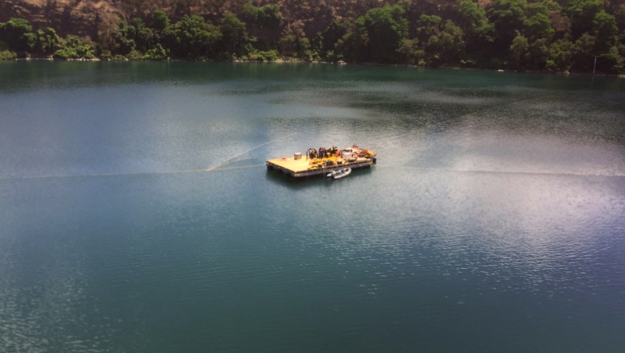
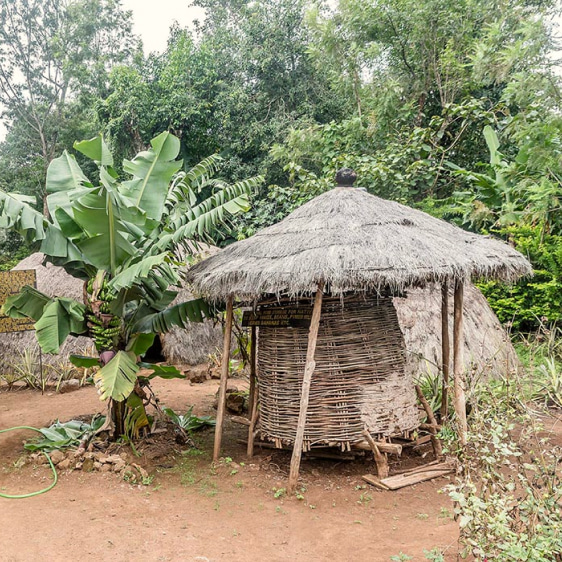
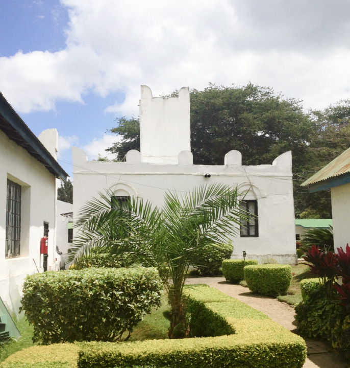

The last sanctuary of wildlife of such magnitude in the world, Tanzania is a perfect spot for your vacation. There are a multitude of local activities to do in the Moshi and Arusha regions. Tours can be organized to either visit the villages, coffee tour, waterfalls sites, Moshi forest tour, canoeing at Momela and Duluti Lake, Maasai village tour, hot springs, Kilimanjaro day trip hiking, go take a bike tour, shopping and the local markets and much more! These kinds of activities can be organized according to clients budgets, interests and fitness
Book the tourThis park has a very unique ecosystem that attracts thousands of animals and birds. The day trip will give you the opportunity to get close up and personal to the animals but also take you in the landscapes of the glorious day game drive. Activities in this park are game drive as a primary activity, walking safari accompanied by a ranger to guide you and bird watching. After breakfast, the day starts as you depart from Moshi with your lunch box headed to Arusha National park.
On your arrival, you will stretch your legs a little bit by having a walking safari where you’ll be accompanied by the ranger to guide you through the rainforest towards the waterfall where you will be able to spot the black and white colobus monkeys going about their day. After this great tour you’ll be driven back to the lodge in Moshi/Arusha/Airport
There is something very special about this particular park amongst the others that seems small but do not be fooled by that. It is full of an amazing range of wildlife. The park is famous for its huge number of elephants, baobab trees and tree climbing lions.
Common animals include waterbuck, olive baboons and giraffes. The park is also good for bird watching , especially between October and May with more than 300 different species recorded. You will have a half day game drive in this amazing park then drive back to Moshi/Arusha before dark for dinner and overnight stay.
In case you have a different idea of how you would want your package to be customized, just reach out to us and we will be more than happy to organise it for you.
Contact UsIt is well known as "Kinukamori" is one of the most attractive waterfalls in northern Tanzania. Most of the visitors visit the area while conducting executions in the Marangu area. The drop height of the water is approximately a 15metre high waterfall and it lies in the small park maintained by the district council.
The waterfall is located at the base of Mt. Kilimanjaro and the distance between the waterfall to Mt. Kilimanjaro Marangu entrance gate is just 4 kilometres from Moshi town. Most visitors take a day trip to visit the place. After an enjoyable day at Kinukamori you will head back to town at the lodge for the dinner and overnight stay.
Maji Moto, known locally as Kikuletwa Hotsprings, is a paradisiac oasis amidst the Tanzanian savannah, offers captivating, Bounty-styled views, crystal-clean water, and dense vegetation around. Located in a 2-hour drive from Moshi (Tanzania) – the main climbing hub of the region – Chemka Hot Springs is the best place to visit after a Kilimanjaro hike or a safari adventure.
This spring has quite a history of its own. You will be served a picnic lunch.
A tour of Materuni Village and Waterfalls is a great way to spend a day away from the bustle of town life. The walk to Materuni Waterfall offers a glimpse into the nature of Tanzania allowing you either to prepare your body for the forthcoming climb to Kilimanjaro or ease your muscles after the climb.
The tour starts with a walk to Materuni Waterfall. It is an opportunity to see how local fruits like avocados, mangos, lemons, and bananas grow, as well as learn some of the local history, traditions, village economy, agricultural and cultural life. When you get to the waterfall, you can refresh yourself in the natural pool, so swimsuits will come in handy!
The tour will continue with a visit to the local village lying in the coffee plantations. The villagers will demonstrate the process of coffee farming and guide you through the preparation of coffee from a bean to a cup. Sing and dance along with the Chaga people as they are grinding, roasting and boiling the beans. When the coffee is ready, villagers will serve lunch – a national Chagga meal.
The tour starts with a walk to Materuni Waterfall. It is an opportunity to see how local fruits like avocados, mangos, lemons, and bananas grow, as well as learn some of the local history, traditions, village economy, agricultural and cultural life. When you get to the waterfall, you can refresh yourself in the natural pool, so swimsuits will come in handy!
The tour will continue with a visit to the local village lying in the coffee plantations. The villagers will demonstrate the process of coffee farming and guide you through the preparation of coffee from a bean to a cup. Sing and dance along with the Chaga people as they are grinding, roasting and boiling the beans. When the coffee is ready, villagers will serve lunch – a national Chagga meal.
This is a crater lake formed from a paroxysmal volcanic outburst and lies on the borders of Tanzania and Kenya. Lake Chala is the new tourism destination in Kilimanjaro where camping and lodges facilities are available for the cheapest prices to enable visitors to explore and enjoy this unique lake at the border between Tanzania and Kenya.
The lake is not a long-distance drive from Moshi, just 1hr drive from Moshi town and depending on the weather the Kilimanjaro mountain I always clearly see on the northeast side of the lake. At the lake you can go canoeing, relishing the beautiful African nature. Your lunch will be served afterwards. On the way back to the lodge you will see Mt Kilimanjaro in all its glory.
The lake is not a long-distance drive from Moshi, just 1hr drive from Moshi town and depending on the weather the Kilimanjaro mountain I always clearly see on the northeast side of the lake. At the lake you can go canoeing, relishing the beautiful African nature. Your lunch will be served afterwards. On the way back to the lodge you will see Mt Kilimanjaro in all its glory.
Chagga ethnic group is one of the largest ethnic groups in Tanzania occupying more than 70 per cent of the Kilimanjaro land. The staple food of the Chagga people is bananas. They are also known for their sense of enterprise and strong work ethics in Tanzania. Most of the Chagga traditional tools, culture and history can be explored by visiting the Chagga Museum which is located in Marangu village.
The museum houses a number of exhibitions including the reconstruction of a thatched Chagga house with complete livestock inside. The museum also has a display of traditional Chagga tools, farming and dancing equipment and so many other traditional tools. This kind of tour stands as a one day activity.
The Natural History Museum is located on Boma road in Arusha, Tanzania. The main focus of this museum is the evolution of mankind. Within this museum, you can also get to know more about natural science research, the discovery of fossils found within the Oldupai Gorge. There are also displays of insects, birds and different animals found in Arusha. It also shows Tanzania's colonial history and its struggle for Independence. It is a full day tour in Arusha city and before dark drive back to your lodge for dinner and overnight stay.
